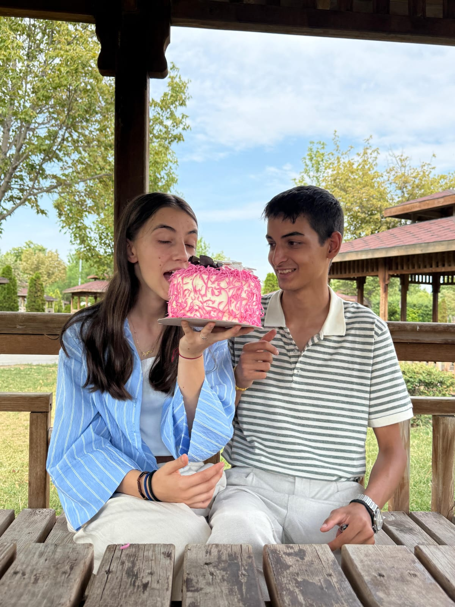
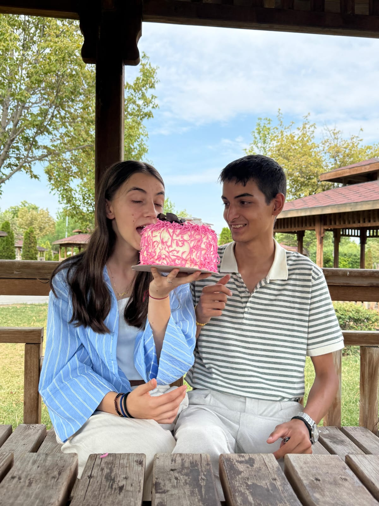

Ben öyle süslü cümleleri becerebilirim doğrudur. Ama bu süslü cümlelerin kaynağı'nın sen olduğunu düşünüyorum.🫠Gözlerin benim tüm dünyamı aydınlatacak kadar etkili ☺ üstüme kar yağsa bile, üşüyor olsam bile gözlerin içimi ısıtıyor. Benim artık gökyüzünü seyretmeme gerek yok çünkü sen benim en iyi arkadaşım en iyi yoldaşım oldun tıpkı yıldızlar gibi. Gökyüzünü seyretmeme gerek yok çünkü sen benim yanımda ay gibi parlıyorsun sevgilim. Nasıl ki çiçekler her sabah güneşe doğru dönüyorlar, ben de sana doğru dönüyorum bitanem. Günaydın yavrumm ♥ 💕
Aşkımm süslü cümleleri pek beceremem şuan içimden gelenleri yazıyorum. Seninle ilk görüştüğümüzde sevgili olacağımızı hiç sanmıyordum. Araban vardı, bana bakmaz gibi duruyordun. İyi ki girdin hayatıma, tekleyen kalbimi hızlandırdın, tekrardan heyecanlandırdın. Aklımda sürekli seninle olduğum anıları döndürüyorum. İyi ki geldin sevgilim, rabbim gözlerini gözlerimden uzağa koymasın. Seni çok seviyorummmmm! Nice birlikte doğum günlerimize bi'tanem, iyi ki doğdun ❤‍🩹🫶🏻💗🤍🫀 🌸
Sen benim kalbimin melodisi, ruhumun huzurusun. 🌹 Ne zaman gözlerine baksam tüm dünyam sessizleşiyor, sadece senin ışığın kalıyor. 🌙 Soğuk bir gecede bile kalbimi ısıtan tek şey senin sevgindir. Gökyüzüne bakmaya gerek duymuyorum, çünkü yanımda kocaman bir evren gibi parlayan sen varsın. ✨ Tıpkı güneşi görünce açan çiçekler gibi, ben de her sabah sana yöneliyorum sevgilim. Sen benim en güzel şarkım, en derin huzurum, en kıymetli yol arkadaşımsın. İyi Gecveler Tatlı Rüyalar aşkım 💕♥
 
